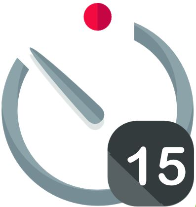
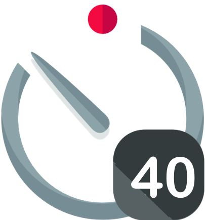

 Recordar materiales, su toxicidad y peligrosidad.
Repartir impresas en papel y explicar y dejar vistas en pantalla digital o proyector las siguientes instrucciones el uso, manipulación y almacenamiento que involucran el mantenimiento de la integridad de la batería:
Apagar el móvil. Antes de comenzar la práctica, revisar que todos los dispositivos estén apagados.
No abrir. Nunca desensamblar baterías de su presentación original; el contenido puede derramarse.
No golpear. No aplastar, perforar ni exponer la batería a golpes físicos o vibraciones excesivas.
Alejar del fuego. No colocar las baterías en el fuego; estas podrían romperse y derramar electrolito, el cual podría incendiarse o explotar.
Alejar del agua. Nunca colocar las baterías en agua; podrían romperse y liberar electrolito. Cuando el electrolito reacciona con la humedad, el agua o el fuego, puede liberar sustancias tóxicas como el fluoruro de hidrógeno (HF), un ácido corrosivo que puede ser peligroso.
Introducción a los elementos de los equipos de protección. Mostrar dónde se encuentran los extintores y explicar su uso:
Extintor y regla PASS: Pull (tirar del pasador), Aim (apuntar a la base del fuego), Squeeze (apretar el mango) y Sweep (barrer de lado a lado)).
El alumnado debe estar calmado y conscientes de que el objetivo de estas instrucciones es aprender sobre los riesgos y cómo prevenir accidentes, no generar pánico.
Por último ofreceremos guantes para aquellos con pieles sensibles y/o alergias.
1.- Cámara trasera y flash.
2.- Antena.
3.- Conexiones.
4.- Cámara frontal.
5.- Procesador+ RAM. Conocido como el cerebro del sistema, es un microchip similar al de los ordenadores. La memoria RAM almacena los datos.
6.- Módem. Hace el trabajo como teléfono en el smartphone. También es responsable de la conexión de datos.
7.- Botones.
8.- Giroscopio y acelerómetro. Estos sensores detectan el movimiento en los tres ejes, así como la magnitud de ese movimiento. No todos los móviles tienen
9.- La bandeja para la SIM.
10.- Altavoz.
11.- Conexión y 'jack'. Sirve para recargar la batería y funciona como conexión de datos. El jack sirve de salida para conectar unos auriculares.
12.- Micrófono.
13.- Motor háptico. Permite conocer el nivel de presión que se aplica sobre la pantalla y actuar de manera diferente en consecuencia.
14.- Batería. Suelen ser de iones de litio.
15.- Escáner dactilar.
16.- Pantalla. Es el elemento más visible del equipo.

Paso 1: Apaga el teléfono y asegúrate de que no haya ninguna fuente de energía activa.
Paso 2: Usa el destornillador adecuado para retirar los tornillos del móvil. Cuidado con los tornillos pequeños.
Paso 3: Con ayuda de las espátulas, retira la carcasa del móvil. Este paso puede ser un poco complicado si el teléfono tiene una carcasa muy ajustada.
Paso 4: Identifica los principales componentes internos:
Batería: Explica cómo es y qué función tiene, además de la importancia de no dañarla.
Placa base: Cerebro del móvil, donde están los circuitos y los chips.
Pantalla: Ver el tipo de cristal utilizado y cómo está conectada a la placa base.
Conectores, chips y otros componentes pequeños
Placa base: Cerebro del móvil, donde están los circuitos y los chips.
Pantalla: Ver el tipo de cristal utilizado y cómo está conectada a la placa base.
Identificación de diferentes metales y materiales (plástico, cobre, estaño, oro, etc.).
 Recordar que el entender los elementos y el funcionamiento de los elementos de dispositivos sencillos también es un conocimiento básico que valoraremos.
Recordar que el entender los elementos y el funcionamiento de los elementos de dispositivos sencillos también es un conocimiento básico que valoraremos.
Repaso de lo aprendido (K-W-L)
Icons by freepik